进数的讨论。我构造了 5 进整数系，然后我还对此提到：“对普通整数环
进数的讨论。我构造了 5 进整数系，然后我还对此提到：“对普通整数环  可以定义一个‘分式域’，即有理数域
可以定义一个‘分式域’，即有理数域  ，同样地，对于
，同样地，对于 如果你想一瞥近几十年来代数学领域的学术研究，可以看看由美国数学学会颁发的科尔代数奖的部分获奖名单（全部名单可以在互联网上查到）。
1960 年：颁给塞尔日·兰（1927—2005），嘉许他的论文《多变量函数域上的非分歧类域论》；颁给麦克斯韦·罗森利希特（1924—1999），嘉许他关于广义雅可比簇的论文……1965 年：颁给瓦尔特·法伊特（1930—2014）和约翰·格里格斯·汤普森（1932— ），嘉许他们合作的论文《奇数阶群的可解性》……2000 年：颁给安德烈·苏斯林（1950—2018），嘉许他关于原相上同调（motivic cohomology）的工作……2003 年：颁给中岛启（1962— ），嘉许他在表示论和几何学中的工作。
纵览这份名单之后，你可能会发现本书略去了一些代数内容，我在此请求你的原谅。雅可比簇？非分歧类域论？原相上同调？这些都是什么东西？
好吧，这就是近世代数，它以群、代数、簇、矩阵等一些关键概念为基础。我希望我已经对这些概念给出了比较令人满意的叙述。即使其中有几个没有解释的术语，它们也仅仅是离开了 19 世纪的这些基本思想的一两步而已。例如，表示指的是对群和代数的研究，其方法是利用第 9 章中给出的矩阵族来对群和代数建模。类域论是用来解决由于因子分解不唯一而引发的各种问题的非常一般化的现代方法，这些问题就是我在第 12 章中讲述的困扰柯西和拉梅的那些问题。可解性与群结构有关，它可以一路追溯到方程的可解性问题，等等。
然而，代数学已经变得越发深奥，而且原相上同调等主题对于非数学专业的读者来说很难理解，我认为甚至是数学专业的人也不一定能够理解，除非他的专业就是这个领域 1。代数学也已经变得非常广泛，包含各种各样的主题，美国数学学会 2000 年的数学主题分类表中共有 63 个主题，代数占了其中的 13 个主题 2。
1巴里·马祖尔（1937— ）教授是一位经验丰富、文笔流畅的数学科普作家，他在 2004 年 11 月的《美国数学学会通告》上向非代数专业读者解释了“原相”（motive）这个概念。我认为这篇文章写得已经尽可能地好了。他的文章是这样开头的：“一个连通的有限单纯复形
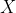
的代数拓扑信息能被其一维上同调刻画到什么程度？”2根据美国数学学会的分类码，这 13 个主题分别是（06）序理论、格论、序代数结构，（08）一般代数系统，（12）域论和多项式，（13）交换环论和交换代数，（14）代数几何，（15）线性代数和多重线性代数、矩阵论，（16）结合环和结合代数，（17）非结合环和非结合代数，（18）范畴论、同调代数，（19）
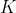
理论，（20）群论及其推广，（22）拓扑群、李群，（55）代数拓扑。（现在通常使用美国数学学会 2010 版数学学科分类标准 MSC2010。——译者注）所以，现在我要行使作者的特权，只概述其中的三个主题以及过去几十年的某些人物，而不是介绍最新代数学的全貌。我将首先介绍范畴论，接着介绍亚历山大·格罗滕迪克的生活与工作，最后介绍近世代数在物理学中的应用。至于原相上同调，就等我未来写书时再介绍吧。
※※※
在 20 世纪末，最受数学系本科生欢迎的教材之一是伯克霍夫和麦克莱恩的《近世代数概论》（A Survey of Modern Algebra，图 15-1 左）。那本书于 1941 年首次出版，它把 20 世纪中期代数学的所有关键概念都清晰地整理到了一起，同时还为学生们准备了数百道练习题来锻炼他们的智慧。数、多项式、群、环、域、向量空间、矩阵以及行列式，在该书中都有相关的介绍。我自己就是从伯克霍夫和麦克莱恩的书里学到代数学的，我的这本书也受到了他们的影响。（实际上不只如此，我还借用了他们书中的一些习题来帮助我阐述观点。）
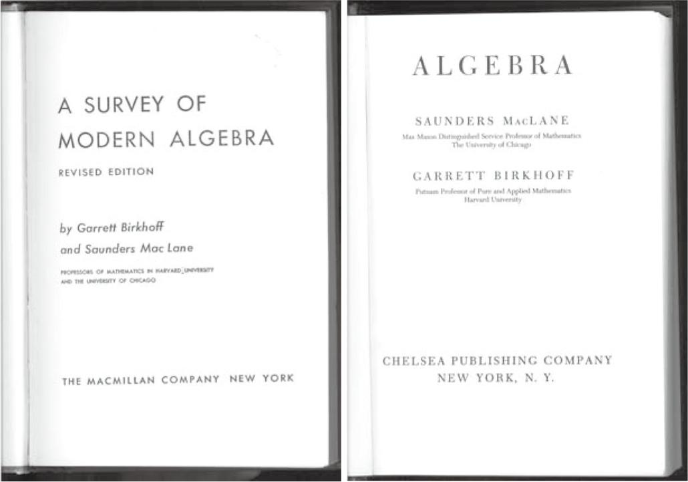
图 15-1 伯克霍夫和麦克莱恩分别于 1941 年和 1967 年出版的两本书
1967 年，《近世代数概论》的全新版本出版了，书名改为《代数》（图 15-1 右）。作者署名的顺序与原来相反，变成麦克莱恩和伯克霍夫。更重要的是，书中呈现的内容发生了变化。标题为“泛构造”的第四章是全新的内容，讨论了函子、范畴、态射和偏序集，这些术语在 1941 年的版本中根本没有出现过。另外，新版还增加了长达 39 页的关于“仿射空间和射影空间”的附录。
一本大学教材在首次出版 26 年后就需要做如此大量的修订，这有点儿令人惊讶。到底发生了什么？这些新的数学对象是从哪里来的？这相当于说，这些函子和偏序集是从哪里突然间冒出来的？
加勒特·伯克霍夫（1911—1996）和桑德斯·麦克莱恩（1909—2005）都是 20 世纪 30 年代后期美国哈佛大学的讲师。伯克霍夫的父亲乔治·伯克霍夫从 1912 年到他去世的 1944 年一直是这所大学的数学教授。正是这位老伯克霍夫被爱因斯坦称为“世界上最大的反犹太主义者之一”，尽管老伯克霍夫确实存有偏见，但这种偏见在当时当地似乎并不罕见 3。年轻的伯克霍夫于 1936 年被聘为哈佛大学的讲师。麦克莱恩是美国康涅狄格州一位公理会牧师的儿子，1934 年到 1936 年在哈佛大学任教，1938 年被哈佛聘为助理教授。
3麦克莱恩说，老伯克霍夫的偏见至少在一定程度上是由 20 世纪 30 年代大萧条引发的朴素爱国主义促成的，对此我不知道其真实性。麦克莱恩说：“哈佛大学的乔治·伯克霍夫……认为我们还应该关注美国年轻人，所以哈佛大学任命的（欧洲）难民相对较少。”〔引自《更多数学人》（More mathematical people）。〕
作为大学代数教师，他们二人深受 1930 年在德国出版的一本书的影响。那本书就是范德瓦尔登的《近世代数学》，它利用完全抽象的公理化方法研究 19 世纪出现的新数学对象，这是首次从更高的数学层次上对这些新数学对象进行清晰阐述。范德瓦尔登给该书增加了一个副标题——“根据 E. 阿廷和 E. 诺特的讲座”。“E. 诺特”当然就是在第 12 章中介绍的埃米·诺特。埃米尔·阿廷（1898—1962）在纳粹上台之前一直是德国汉堡大学的优秀代数学家，他在纳粹上台之后来到美国，曾在多所大学任教。事实上，最初的想法是阿廷和范德瓦尔登共同编写该书，但是由于研究工作的压力，阿廷退出了这个项目。范德瓦尔登的著作把所有新的数学对象——群、环、域和向量空间都整合到一起，对它们进行抽象的公理化处理，就如希尔伯特、诺特和阿廷所发展的那样。
通过 1930 年的著作《近世代数学》，范德瓦尔登把这种思维方式传递给数学界。通过 1941 年的著作《近世代数概论》，伯克霍夫和麦克莱恩又把它们传授给本科生。从此，“近世代数”一词在数学家们和他们的学生的头脑中有了明确的含义，其本质就是研究代数学的如下方法——完全抽象且精确公理化的用集合论语言表述的方法，与第 11 章中给出的“群”的定义类似。
这是抽象化的终点吗？这是乔治·皮科克于 1830 年（见第 10 章）首次提出的思想的终点吗？绝对不是！
※※※
1940 年，正当《近世代数概论》准备出版之时，麦克莱恩参加了一个在美国密歇根大学举办的代数拓扑会议。在这次会议上，他遇到了年轻的波兰拓扑学家塞缪尔·艾伦伯格（1913—1998），艾伦伯格在此一年前迁居到美国，麦克莱恩已经非常熟悉他发表的论文了。他们成了朋友，并于 1942 年合作发表了一篇关于代数拓扑的论文。这篇论文的题目是《群扩张与同调》。这篇论文研究的是同调，对此我需要简单介绍一下。
在第 14 章中，我用嵌入在流形中的闭路族（即闭路径的集合）来描述流形的基本群。这个闭路族组成的基本群是一种同伦群。通过推广这些路径，即推广这些拓扑等价于圆周的一维闭路、拓扑等价于球面的二维“超闭路”、拓扑等价超球面的三维“超闭路”或更高维的“超闭路”，等等，我们可以构造出给定流形的其他同伦群。
这些同伦群非常有趣，也很重要，但在提供关于流形的信息方面，它们有一些缺点。从数学的角度看，它们有点儿难以处理 4。
4斯旺教授补充了一段有趣的历史注记：“同伦群是由爱德华·切赫（1893— 1960）于 1932 年发现的，但是当他发现它们是交换群时，他认为它们没什么意思，就撤回了论文。几年后，维托尔德·胡尔维茨（1904—1956）重新发现了它们，因此人们常把发现同伦群的荣誉归功于维托尔德·胡尔维茨。”
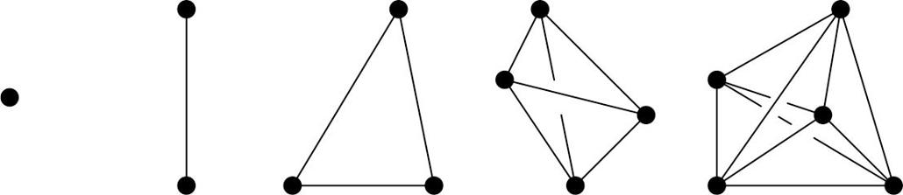
图 15 - 2 从左到右分别为：零维单形（点）、一维单形（线段）、二维单形（三角形）、三维单形（四面体）和四维单形（五胞体）5
5五胞体（pentatope）是考克斯特在他的著作《正多面体》的第七章中用来描述这个物体的词语。我没有在其他地方看到过这个词，不知道它有多流行，我也不认为它会在拼字游戏中留存下来。正如图 15 - 2 中所展示的，五胞体的线框图显然已经从四维空间投影到了二维，所以这个图是很不精确的。
庞加莱发现，对任何流形都可以构造一系列完全不同的群，这些群就是同调群。构造同调群的最直接的方法就是用完全由单形组成的近似流形来代替这个流形。想象一个球面可以变形成一个四面体（即以三角形为底的三棱锥，图 15-2）的表面，你就会有所体会。你得到了一个图形，它是由零维的顶点、一维的边和二维的三角形面组成的。研究经过这些点、边和面的各种可能方法，当这些路径的方向相反时，路径可以相互抵消（图 15-3），由此可以得到一系列群，它们通常被记为
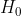
、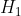
和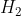
。这些群是同调群，它们被统称为这个曲面的同调。另外，你还可以反过来完成整个操作，将顶点当作面，将面当作顶点，仍将边当作边（但是它们具有不同的组织形式）6。然后你就可以得到一系列不同的群，它们被统称为 上同调。6这是与几何中随处可见的对偶概念相关的一个过程。三维几何中经典的“柏拉图多面体”就展示了对偶。立方体（8 个顶点，12 条棱，6 个面）与正八面体对偶（6 个顶点，12 条棱，8 个面），正十二面体（20 个顶点，30 条棱，12 个面）与正二十面体对偶（12 个顶点，30 条棱，20 个面），正四面体（4 个顶点，6 条棱，4 个面）与自身对偶。顺便提一下，出于历史真实性的考虑，正是埃米·诺特指出了关注群性质的好处。早期的研究者们用不同的语言描述了同调群。
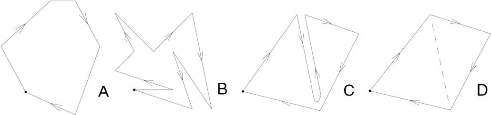
图 15-3 路径 A 和路径 B 是同伦等价的，路径 C 和路径 D 是同调等价的
我们可以对任意维数的任意流形做类似的事情。现在，三角形是可以包围一个区域的最简单的平面凸多边形。对数学家来说，它是一个二维单形。三维单形是一个四面体，即三棱锥，它有 4 个顶点和 4 个面，每个面都是一个三角形。四维单形是四维空间中的类似物，有 5 个顶点和 5 个四面体“面”（图 15-2）。为了完整起见，我们把线段称为一维单形，把孤立的点称为零维单形。
任何流形都可以像这样被“三角剖分”成许多单形，但是如果这个流形有洞，就像环面一样，那么几个单形就必须被黏合在一起，形成一个“单纯复形”。一旦用这种方法对流形进行三角剖分，就可以得到它的同调，即单纯同调。这个同调及对应的上同调携带了这个流形的有用信息。另外，同调群也比同伦群更容易处理。（顺便说一下，这种方法与地图绘制者在实地测量时进行的三角测量是相似的，见下文。）
我们已经看到了 20 世纪后期代数学的一个关键概念——把代数对象附加到一个流形上。我提到的这个代数对象就是我们在进行拓扑研究时出现的群。然而，在同调论中，我们还可以把向量空间和模（见第 12 章）附加到一个流形上。这为代数拓扑和代数几何开辟了一片丰富的新领域。在这片领域中，最著名的探索者是法国数学家让·勒雷（1906—1998）、让–皮埃尔·塞尔（1926— ）和亚历山大·格罗滕迪克（1928—2014），稍后我再介绍他们。
这就是艾伦伯格和麦克莱恩 1942 年发表那篇论文的背景。麦克莱恩（和伯克霍夫）此前刚刚写完了一部杰作，在当时已经开始流传的“近世代数”的启发下，他们用非常抽象的方式研究了这个主题，从抽象程度上来说，他们的处理方式已经完全超出了我给出的简短描述，也与三角形和四面体相去甚远。在写这篇论文时，他们二人都认为可能还存在更高的抽象层次。
在此三年后，他们在另一篇题为《自然等价的一般理论》的合作论文中达到了那种更高的抽象层次——他们在这篇论文中首次提出了范畴论。
我即将介绍的范畴论是从同调论中自然产生的。在同调群最初从拓扑学中产生之后的四十年里，人们发现同调群与其他代数分支有着深刻的联系，特别是与第 13 章中勾勒的希尔伯特关于多项式环的不变量的工作密切相关。通过黎曼建立的函数论与拓扑学之间的联系，它们还与分析学相关——与研究函数及函数族的高等微积分有关。不久之后，在 20 世纪 50 年代，这一切发展成一个被称为同调代数的研究领域。1955 年，艾伦伯格与伟大的代数拓扑学家亨利·嘉当（1904—2008）合作编写了第一部关于同调代数的著作。其中的普遍性非常高，与范畴论可以自然地平行发展。
※※※
范畴论背后的一般思路如下。
诸如群、环、域、集合、向量空间和代数这样的代数对象是由元素（例如数、置换、旋转）和合成这些元素的一种或多种方式（例如加法、加法和乘法或置换的合成）构成的。当我们找到把某个对象变换为，或者说“映射”为另一个对象或者它自身的方法时，这些对象的结构往往会清晰地显示出来。（例如，回想一下，在“数学基础知识：向量空间和代数”中，向量空间是如何被映射到它自己的标量域的。同样，回想一下对伽罗瓦理论的概述以及其中的核心问题——将一个解域置换或映射到它本身并且保持系数域不变。）
尽管它们是不同种类的对象，映射也有不同的可能，但是在所有情况下，贯穿元素、合成方式和变换的结构和方法非常相似。例如，考虑环与理想的关系（见第 12 章）以及群与正规子群的关系（见第 11 章），这两种关系之间有相似之处。那么，我们是否可以提炼出某些一般原则，或者说代数结构的一种一般理论，使得所有这些对象以及我们未来可能提出的其他对象都可以统一在一组超级公理，或者说一种普遍代数之下呢？ 7
7术语“普遍代数”（或译为“泛代数”）有一段有趣的历史，至少可以追溯到阿尔弗雷德·诺思·怀特海（1861—1947）在 1898 年出版的一本书的书名，怀特海是英国数学家、哲学家，他与罗素合著了《数学原理》。埃米·诺特也使用了这个术语。不过，我在这里只是偶尔提示性地使用这个术语，与怀特海、诺特或者其他任何人的用法不完全一致。
艾伦伯格和麦克莱恩给出了答案：是的，这是可以做到的。为群或向量空间这样的数学对象组成的集合配备上对象之间一些“性质良好”的映射族，这就是一个范畴，其中的映射被称为态射。现在，你还可以（小心地）再前进一步，建立一个范畴（连同其中所有的态射）到另一个范畴的超映射。这种超映射被称为一个函子。
举例来说，回顾我在第 14 章中对 进数的讨论。我构造了 5 进整数系，然后我还对此提到：“对普通整数环 可以定义一个‘分式域’，即有理数域 ，同样地，对于
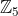
，有一种方法可以定义其分式域 ，在这个域中不仅可以做加法、减法和乘法，而且还能做除法。”其中所隐含的技巧就是范畴论中的函子的概念。事实上， 不只是一个普通的环，它是一个相当特殊的环，这种环被称为整环，其中的乘法可交换（对一个环来说，这不是必要的），它还有乘法单位元“1”（对一个环来说，这也不是必要的），而且只有当  或
或  等于 0 或者二者都为 0 时，
等于 0 或者二者都为 0 时，
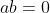
才成立（这也不是环的必要条件）。从 得到 的方法是从一个整环出发，构造一个分式域。一般地，对任何整环都可以构造一个分式域，因为我们能够构造从整环及其间的映射（或由这些映射组成的一个子集）所构成的范畴到域及其间的映射（或类似的子集）所构成的范畴的一个函子。
尽管我不打算深入讨论这些内容，但是我忍不住要提一下我最喜欢的函子：遗忘函子。它是从一个由代数对象组成的范畴（比如群范畴）到（不考虑结构的）最普通的集合范畴的函子，“遗忘”原来对象中存在的所有结构。
※※※
在如此高的抽象程度上可以得到有用的数学吗？这取决于你向谁问这样的问题。直到 2006 年，范畴论仍然存在争议。当你提到范畴论时，许多专业数学家（我认为尤其是英语国家的专业数学家）都会皱眉或摇头。只有少数本科课程讲授范畴论。在迈克尔·阿廷于 1991 年出版的 600 多页的本科权威教材《代数》中，“范畴”“态射”和“函子”这几个词从未出现过。
在 20 世纪 60 年代中期，当我是一名数学系本科生时，我最常听到的观点是，尽管范畴论可能是组织现有知识的一种便捷方式，但是它太过抽象，无法产生任何新的理解（不过我需要说明，尽管范畴论起源于美国，但英国人怀疑它是从欧洲大陆传来的。）
无论如何，麦克莱恩非常喜欢他与艾伦伯格共同创造的理论。到了 20 世纪 60 年代中期，就在《近世代数概论》修订版问世之时，他重新改写了整本书 8，使之向范畴论方向倾斜。其他人也追随麦克莱恩，如果范畴论不能被普遍接受，那么它当然也不能作为本科生的代数课程讲授，它在数学界中有众多拥趸。追随者们充满信心地在范畴论中打趣。威廉·劳维尔（1937— ）在一本有关范畴在集合论中的应用的书的开头说：“首先，我们剥夺了对象的几乎所有内容……”罗宾·甘迪（1919—1995）在《新方塔纳现代思想辞典》中写道：“那些喜欢研究特殊、具体问题的人喜欢把范畴论说成‘泛化抽象废话’。”9
8改写后的著作为《代数学》（麦克莱恩与伯克霍夫合著）。——译者注
9据我所知，范畴论唯一一次在流行文化中出现是在 2001 年的电影《美丽心灵》中。其中有这样一幕，一个学生对约翰·纳什（1928—2015）说：“伽罗瓦扩张实际上等同于覆盖空间！”然后那个学生一边吃着三明治，一边喃喃自语道：“……函子……两个范畴……”这似乎暗指可以通过一个函子把由所有的伽罗瓦扩张（见“数学基础知识：域论”）组成的范畴映射到由所有的覆盖空间（一个拓扑概念）组成的范畴——这是一个非常深刻的见解。
范畴论的推动者提出了大量断言，其中一些超出了数学领域，进入了哲学领域。事实上，范畴论从一开始就带有一些自觉的哲学意味。“范畴”一词取自亚里士多德和康德，而“函子”是从德国哲学家鲁道夫·卡尔纳普（1891—1970）那里借用的，卡尔纳普在他 1934 年的著作《语言的逻辑句法》中创造了这个词。
范畴论的哲学内涵超出了本书的范围，不过我将在本章结尾对它们做一个泛泛的评述。当然，很多职业数学家使用这个理论取得了重要的成果。比如，亚历山大·格罗滕迪克就是这样的一个人。
※※※
格罗滕迪克是近代代数学历史上最具传奇色彩且最具争议的人物。大量关于他的生活的文献不断出现，目前为止，这些文献的数量可能已经超过了关于他的数学工作的作品的数量。迄今为止，最易于理解而且最详尽的关于他的生活和工作的英文文献是阿琳·杰克逊 10 的《仿佛来自虚空：亚历山大·格罗滕迪克的故事》（“As If Summoned from the Void: The Life of Alexandre Grothendieck”），这篇文章被分成两部分发表在 2004 年 10 月和 11 月的《美国数学学会通告》上，共计约 2.8 万字。互联网上还有许多专门讨论格罗滕迪克的网站。能阅读英文的读者可以从名为“Grothendieck Circle”的网站看起，该网站也包含了许多用法文和德文写就的内容。上面提到的阿琳·杰克逊为他写的传记的两部分也在其中。
10阿琳·杰克逊引用了朱斯蒂娜·班比的一些评价，她那时正与格罗滕迪克生活在一起：“他数学上的学生都是很认真的，而且很有纪律，工作非常努力……在反文化运动中他则见到些整天晃荡听音乐的人。”
格罗滕迪克的故事之所以引人入胜，是因为它讲述的是那种典型的迷人的“超凡脱俗”的人物：圣愚、疯狂的天才以及遁世的修行者。
我首先讲他天才的一面。格罗滕迪克的辉煌年代是 1958 年到 1970 年。1958 年，法国高等科学研究所（以下简称 IHÉS）在巴黎成立，它是根据莱昂·莫查纳（1900—1990）的构想建立的。莫查纳是一位具有俄国和瑞士血统的法国商人，他认为法国需要一个私立的、独立的类似于美国普林斯顿高等研究院的研究机构。格罗滕迪克当时 30 岁，是 IHÉS 的创始教授。
IHÉS 的私立性和独立性因持续的资金需求问题而受到影响。莫查纳的个人资源不够支撑 IHÉS 的运营，从 20 世纪 60 年代中期开始，他开始接受法国军方的小额资助。格罗滕迪克是一名狂热的反军国主义者。由于格罗滕迪克不能说服莫查纳放弃军方的资助，因此他就于 1970 年 5 月从研究所辞职了。
在 IHÉS 的 12 年里，格罗滕迪克是一位轰动数学界的人物。他研究的领域是代数几何，他把这门学科提升到一个更一般化的水平，使之吸收了数论、拓扑学和分析学的一些关键内容。
格罗滕迪克追随上一代法国数学家让·勒雷的开创性工作。同 130 年前的庞斯列一样，勒雷也在身为战俘期间提出了他最重要的想法。勒雷与安德烈·韦伊一样，于 1906 年出生，1998 年去世。身为法国军队的军官，勒雷在 1940 年法国沦陷时被俘，在第二次世界大战结束前一直被关在奥地利北部阿伦特施泰格附近的集中营。勒雷当时的研究专长是流体力学。然而，为了避免自己的专业技术被德国应用于战争，他把研究兴趣转移到了当时他所知道的最抽象的领域——代数拓扑，把同调理论添加到我在第 15 章中讲述的新领域中。在接下来的一代人中，格罗滕迪克和他的同代人法兰西学院的让–皮埃尔·塞尔就是在这个领域闻名的。
格罗滕迪克是一位富有魅力的教师，在 20 世纪 60 年代，他的学生们对他表现出来的热忱让人们觉得是一种狂热的崇拜。他的数学风格不是每个人都喜欢的，诋毁他的言论也并不少见。然而，根据许多了解他并和他一起工作过的一流数学家（其中包括数学风格与他完全不同的数学家）的说法，在那段辉煌的岁月里，他的数学创造力如喷泉一般，不停喷涌出令人震惊的洞见、深刻的猜想以及杰出的成果。1966 年，他获得了菲尔兹奖，这是数学英才梦寐以求的最高级别奖项。获奖的评语是“在韦伊和扎里斯基的工作的基础上，为代数几何带来了根本性的进展”。
※※※
我在前面提到，格罗滕迪克是典型的圣愚和疯狂的天才。尽管我自己不能理解他的大部分工作，但是诸如尼古拉斯·卡茨（1943— ）、迈克尔·阿廷（1934— ）、巴里·马祖尔（1937— ）、皮埃尔·德利涅（1944— ）、迈克尔·阿蒂亚爵士（1929—2019）和符拉基米尔·弗沃特斯基（1966—2017）（其中后三位都是菲尔兹奖获得者）等数学家对他的工作的评价足以让我确信他是天才。神圣、愚蠢和疯子说的又是什么呢？
神圣和愚蠢结合在一起，形容他如孩童般天真，了解格罗滕迪克的每一个人都这么说。这倒不是说他在体格上像孩子。他（至少在壮年时）高大健壮、英俊潇洒，是一个优秀的拳击手。1972 年，在阿维尼翁的一次政治示威中，44 岁的格罗滕迪克击倒了两名试图抓他的警察。
不过，在格罗滕迪克二三十岁时，他全身心投入在工作上，远离尘世，对世间之事一无所知，据说，他似乎除了数学之外几乎不考虑其他任何事情。IHÉS 的教授路易斯·米歇尔（1923—1999）回忆说，大约在 1970 年左右，他告诉格罗滕迪克有一个会议是由“NATO”（北大西洋公约组织）赞助的。格罗滕迪克看起来很困惑。米歇尔问他知不知道“NATO”是什么。他的回答是“不知道”。
格罗滕迪克“无知”的范围也扩展到了他不感兴趣的数学领域，也就是说，除了最抽象的代数之外，他对所有其他数学领域都不感兴趣。例如，他不觉得数字有趣。57 是 3 与 19 之积，因此它不是素数，数学家们有时把 57 叫作“格罗滕迪克素数”，这是为什么呢？故事是这样的，格罗滕迪克在参加一次数学讨论时，当时有一个人建议他们尝试将在某个特定素数上试验过的过程应用于所有素数。“你是指一个具体的素数吗？”格罗滕迪克问。那个人回答道：“是的，一个具体的素数。”格罗滕迪克说：“好吧，我们就取 57。”
格罗滕迪克悲惨的童年无疑造成了他对世界和数学的理解很零散。他的父母都是具有反叛思想的怪人。格罗滕迪克的父亲名叫夏皮罗，是乌克兰犹太人，出生于 1889 年，他一生都生活在无政府主义政治的阴暗世界中，也就是维克托·塞尔日（1890—1947）在回忆录中描述的世界。夏皮罗几次被关进沙皇的监狱里，他在试图逃脱沙皇警察的追捕时自杀未遂，失去了一只手臂。他在 1921 年前往德国，靠当街头摄影师谋生，这样就无须受雇于人，也不违反他自己的无政府主义原则。
格罗滕迪克的母亲是约翰娜·格罗滕迪克，格罗滕迪克随了他母亲的姓。约翰娜是来自德国汉堡的非犹太人，她反抗自己的中产阶级出身，来到柏林生活，偶尔为左翼报纸撰写稿件。格罗滕迪克出生于柏林，他的母语是德语。第二次世界大战爆发时，这一家人都在法国巴黎。然而，他的父母曾经在西班牙内战中站在了共和党一边，所以被法国战时当局认为是潜在的危险分子。格罗滕迪克的父亲被捕，法国沦陷后，他被押送到奥斯威辛集中营，并被杀害。孤儿寡母在俘虏收容所中度过了两年。之后，格罗滕迪克被带到了法国南部的一个抵抗势力很强的小镇。格罗滕迪克在自传里写道，当时的生活极不稳定，定期有纳粹的扫荡，他与其他犹太人不得不经常在树林里一躲就是好几天。尽管如此，他还是幸存下来，在镇上的学校接受了一些教育。在 17 岁那年，他与母亲团聚。三年后，在一所省立大学听了一些杂乱无章的课之后，格罗滕迪克的一位老师建议他去巴黎，跟随伟大的代数学家亨利·嘉当学习。格罗滕迪克听从了老师的建议，他的数学生涯也由此步入正轨。
格罗滕迪克在自传中表达了对父母的尊敬。像他的父亲一样，这个男人的信念绝对坚定。他虽然在 1966 年接受了菲尔兹奖，但拒绝前往莫斯科参加国际数学家大会领取奖章，因为那一年大会在莫斯科举办，格罗滕迪克反对苏联的军事政策。1967 年，他在越南北部进行了为期三周的访问，在森林里讲授范畴论。因为战争，河内的学生都被疏散到森林里，以躲避美军的轰炸。
11 年后，60 岁的格罗滕迪克被瑞典皇家科学院授予克拉福德奖。这个奖项也被他拒绝了。（该奖项有 20 万美元奖金，格罗滕迪克似乎从来就不在乎金钱。）在他的说明信里，格罗滕迪克抨击了数学家和科学家们差劲的道德标准，这封信不久之后被法国日报《世界报》转载。
格罗滕迪克所做的一切都符合真正的无政府主义精神，而不是受到了那时已经成为法国知识分子特点的尖酸的反美主义的影响。虽然经历了越南之行，但是格罗滕迪克也没有像很多法国知识分子那样崇尚共产主义或苏联。那个时代的一些后现代主义言辞似乎已经渗透到他的思想里。他在自传中写道：
每一门科学，当我们不是将它作为能力和统治力的工具，而是作为我们人类世代以来孜孜追求的对知识的冒险历程时，不是别的，就是这样一种和谐，从一个时期到另一个时期，或多或少，巨大而又丰富：在不同的时代和世纪中，对于依次出现的不同的主题，它展现给我们微妙而精细的对应，仿佛来自虚空。11
11本段引用自欧阳毅教授的译文《仿佛来自虚空》。——译者注
如果你忽略上面这段话中我用黑体标注的后现代主义词语，那么你会发现，这段行文实际上非常漂亮。
※※※
我们再来说说格罗滕迪克神圣与疯狂的一面。从 IHÉS 辞职后，格罗滕迪克在巴黎的法兰西学院教了两年书，但是他有一个令人不安的习惯，他经常停止讲课而去为和平主义呐喊。在经历了几次尝试建立公社均告失败之后，他于 1973 年在法国马赛以西、位于地中海沿岸的蒙彼利埃大学取得了一个职位。按照法国学术界的标准，这是超乎寻常的自我降级。大多数法国学者要花费好几年时间才能谋求巴黎的一个职位，在得到职位之后，宁愿忍受折磨也不愿放弃它。格罗滕迪克对巴黎的职位一点儿也不在乎。世俗的东西对他来说似乎没有多大意义。
格罗滕迪克在蒙彼利埃大学工作了 15 年，在 1988 年 60 岁时退休。在此期间，他写完了他的自传《收获与播种》（从未出版，但手稿却广为流传），并完成了许多数学和哲学著作和文章。他学会了开车，不过水平很差。在日本，他成了一个小众人物，许多佛教僧团前来拜访他。他成为环保主义者，投身于环保运动，就这个问题和其他很多话题向当局提出抗议。
1990 年 7 月，在他退休的两年后，格罗滕迪克请求他的一位朋友保管他的所有数学文章。不久之后，也就是 1991 年初，他消失了。他的仰慕者们最终在比利牛斯山脉的一个偏远村庄中找到了他，他一直待在那里 12。一些消息称他成了一名佛教徒，也有消息称他把时间花在反对魔鬼和创作他的所有作品上。曾经到格罗滕迪克的隐居地拜访过他的罗伊·利斯克在 2001 年的一篇报道中写道：
12格罗滕迪克已于 2014 年去世。——译者注
尽管与他直接沟通几乎是不可能的，但村子里的邻居们会照顾他。因此，尽管他提出了只靠喝蒲公英汤生存的想法，但是他的邻居们会确保他的合理饮食。这些邻居也同巴黎和蒙彼利埃的祝福者们保持着联系，所以大家不必为他担心。
亚历山大·格罗滕迪克在黄金时代所做的数学工作现在依然流行，那些理解它的人（我可不敢说自己是其中之一）在提起它时仍然带着敬畏和惊叹。
※※※
人们常说，一个国家的书面语与人们日常使用的口语时近时远。英语书面语在乔叟时代比较接近于口语，到了 18 世纪早期的拉丁文学全盛时期，则与口语相去甚远，而到了现代又与口语更加相近。类似地，代数与科学的现实世界也时近时远。
正如我们所看到的，最早的代数起源于度量、计时和土地测量等实际问题。（尽管这并非很重要，但是我得以在本书的第一章和最后一章都很自然地提到了土地测量仍然是一种有趣的对称。）丢番图和中世纪阿拉伯数学家们有时为了他们自己的内在兴趣而脱离实际问题去研究代数问题，从而增加了抽象层次。这种研究态度延续到文艺复兴时期和近世，那时人们对三次方程和四次方程的纯代数研究产生了极大的兴趣，并最终得到了一般解。
从 1600 年前后几十年间现代字符体系的发明开始，到 18 世纪晚期攻克一般五次方程，新的字母符号体系被广泛用于解决各个领域中的实际问题：土木和军事工程、天文学和航海学、会计学以及统计学的初级阶段。自起源于美索不达米亚以来，代数在这段时期可能更贴近现实世界。
然而，19 世纪纯代数的发展如此丰富多彩，以至于这门学科超越了任何实际应用，几乎独处于一个完全无用的领域。即使实用主义者从代数学中获得灵感，他们也表现得漫不经心、囫囵吞枣。我在第 8 章中已经提到了吉布斯和亥维赛对哈密顿珍爱的四元数的轻视。到 19 世纪末，代数学已经把科学远远抛到后面。如果你在 1893 年向年轻的希尔伯特请教零点定理的实际应用，他一定会大笑起来。
在 20 世纪，尽管代数学的抽象化层次呈现出越来越高的趋势，但是代数与现实应用之间的差距在某种程度上开始缩小。19 世纪发现的所有新的数学对象都有了一些科学应用，可能某些数学对象仅在纯理论研究中得到应用。尤金·维格纳（1902—1995）在他 1960 年的里程碑式的论文《数学在自然科学中不可思议的有效性》13 中说，这是一种“奇迹”。不知怎么地，这些纯粹思考的产物、这些群和矩阵、这些域和流形，确实可以描述现实世界中的真实事物或真实过程。
13这篇论文的中文译文可见《数学译林》2005 年第 1 期。——译者注
代数学的“不可思议的有效性”随处可见。例如，群在编码和密码理论中非常重要，矩阵现在是经济分析的基础，代数拓扑中的一些概念出现在从发电系统到计算机芯片设计的各个领域。根据范畴论的宣传者所述，甚至连范畴论也在计算机语言设计中创造着奇迹，尽管我自己无法判断这个断言的价值。
然而，毫无疑问，就代数学而言，维格纳所说的“不可思议的有效性”的最引人注目的例证出现在现代物理学中。
※※※
20 世纪物理学发生的两次重大的革命当然是相对论和量子理论。两者都建立在 19 世纪的纯代数概念的基础之上。
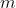
行、第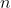
列的数字是这个量子从态 跃迁到态 的概率。这种情况下的逻辑推理需要考虑把这些数阵乘起来，并给出这样做的唯一的恰当方法，但是当他试图做这样的乘法运算时，他发现乘法是不可交换的。数阵 乘以数阵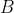
得到一个结果，而数阵 乘以数阵 则得到不同的结果。这究竟是怎么一回事？好在海森堡是德国哥廷根大学的研究助理，所以他身边有希尔伯特和诺特来为他详细解释矩阵代数的原理。14盖尔曼用于组织强子的那个群（在专业术语中叫作 3 阶特殊酉群）和洛伦兹群都可以用矩阵来刻画，不过矩阵中的项都是复数。
现在，在 21 世纪初，更奇怪、更大胆的物理学理论正在流行。如果没有哈密顿、格拉斯曼、凯莱、西尔维斯特、希尔伯特和诺特的工作，人们就不可能构想出这些理论。其中最大胆的一些理论源自试图统一 20 世纪两个伟大发现——相对论和量子力学，这些理论包括：弦理论、超对称弦理论、M 理论和圈量子引力论，等等。所有这些理论都至少从 20 世纪的代数或代数几何中汲取了一些灵感。
以卡拉比–丘流形（图 15-4）为例，它提供了弦理论所需要的“缺失”维度。根据弦理论，这些维度是潜伏在时空中以普朗克尺度（约为
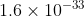
cm）观测的极小区域中的六维空间。它们最早是由德国数学家埃里克·凯勒（1906—2000）首先想到的。凯勒和扎里斯基一样，在罗马跟随意大利的代数几何学家学习，不过他比扎里斯基晚去了几年（1932 年到 1933 年）。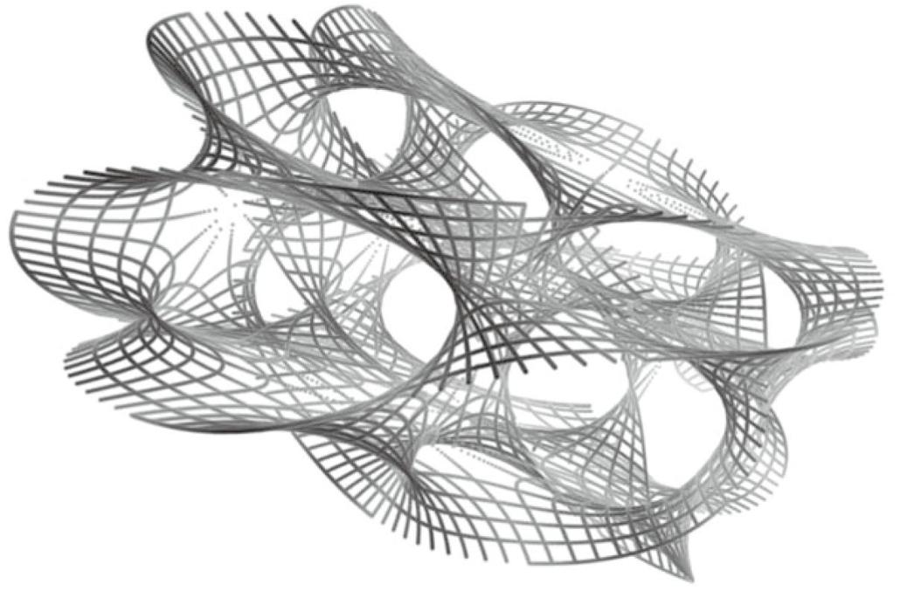
图 15-4 卡拉比 - 丘流形
基于黎曼的某些思想，凯勒定义了一族具有某些一般性和有趣的性质的流形 15。例如，每个黎曼曲面都是一个凯勒流形。下一代的美国数学家欧金尼奥·卡拉比（1923— ）确定了凯勒流形的一个子类，并猜想它们的曲率应该具有一种有趣的简单性。
15顺便一提，其准确定义是“容许平行旋量存在的黎曼流形，这些旋量相对于某个具有完全反对称挠率的度量联络是平行的”。
1977 年，来自中国的年轻数学家丘成桐（1949— ）证明了卡拉比猜想，这种类型的空间今天被称为卡拉比–丘流形 16。其曲率的简单性，即某种“光滑性”，使得它们成为弦运动的理想选择，根据弦理论，这种运动在我们的仪器中看起来就像是各种各样的亚原子粒子和包括引力在内的各种力。这种空间是六维的这个事实有点儿令人惊讶，但是这些“额外”的维度被“折叠起来”，在以我们为主导的宏观世界中是看不见的，就像从足够远的地方看一根粗粗的三维缆索时，它看起来像是一维的一样。
16丘成桐是菲尔兹奖和克拉福德奖获得者。他 1949 年 4 月出生于中国广东省，在 20 世纪 60 年代初随家人搬到香港，在那里接受了早期的数学教育。他目前是美国哈佛大学数学教授。
※※※
因此，我们似乎有理由认为，20 世纪以抽象程度越来越高为特征的代数学的抽象程度可能不会再提高，或者至少暂时停止提高。同时，代数学家则忙于回答物理学家提出的难题，而且也明确了像范畴论这样的超抽象方法的适当地位。
还有这样的可能，代数学无法作为一门独立的数学学科继续存在。20 世纪是一个统一的时代，代数学扩张到数学的其他领域，这些领域也反过来影响它。如果我从事高维流形上的函数族的研究，这些族具有群结构，那么我从事的是分析学（函数）、拓扑学（流形）还是代数学（群）研究呢？
认为代数学将继续存在的观点（这也是我所支持的观点）基于这样一种想法：代数学的思维方式是独特的。我们回顾一下哈密顿的《作为纯时间科学的代数》（见第 14 章）和其他关于数学思维与其他类型的思维活动之间的关系的思考。2000 年 6 月，伟大的代数学家阿蒂亚爵士在加拿大多伦多的一场讲座中说，几何和代数是“数学的两个形式支柱”，并认为它们分属我们的大脑的不同区域。
几何学讲的是空间……如果我面对这间房间里的听众，我可以在一秒内或者是一微秒内看到很多，接收到大量的信息……在另一方面，代数本质上涉及的是时间。无论现在做的是哪一类代数，都是一连串的运算被一个接着一个罗列出来，这里“一个接着一个”的意思是我们必须有时间的概念。在一个静态的宇宙中，我们无法想象代数，但几何的本质是静态的。17
17这篇文章以“Mathematics in the 20th Century”为题发表于《美国数学月刊》（108(7)）。（中文译文《二十世纪的数学》发表于《数学译林》2002 年第一期。——译者注）
阿蒂亚爵士说的“一连串的运算”就是“algorithm”（算法），单词“algorithm”是对给出“algebra”（代数）这个词的花拉子密（见第 3 章）的名字的讹传。
据我所知，数学家埃里克·格伦沃尔德在 2005 年春天的《数学信使》（Mathematical Intelligencer）杂志中把阿蒂亚爵士的思路推向极致。格伦沃尔德在题为《数学内外的演化与设计》（Evolution and Design Inside and Outside Mathematics）一文中主张广义的二分思维，也就是一种阴阳二分模型，我对此概述如下。（有一些条目是我自己添加的，与格伦沃尔德无关。）
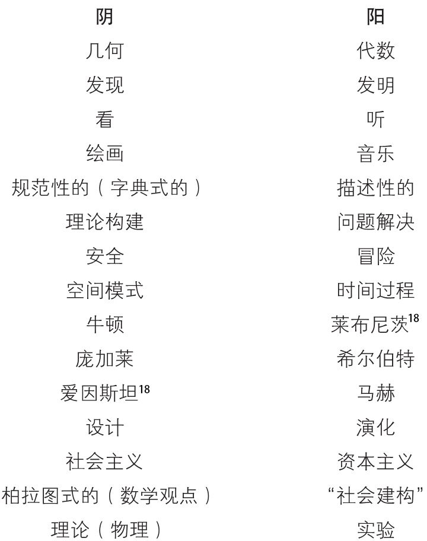
18 这里的意思是，牛顿是绝对空间的代表，而莱布尼茨则更倾向于另一种观点，正如这首小诗所解释的那样：
空间
让所有的东西都不在同一个地点。
当然，你可以整晚都玩这种智力游戏，但你不会得出太多结论。（让我有点儿惊讶的是，我自己竟然有足够的自控力把“奥古斯丁派”和“贝拉基派”从列表中划掉。）19
19认为爱因斯坦把所有的绝对排除在物理之外，把我们丢进一个相对世界之中是一个非常普遍的误解。事实上，他没有这样做。爱因斯坦和牛顿一样都是“绝对论者”。他排除的是绝对空间和绝对时间，取而代之的是绝对时空。任何一本关于现代物理的畅销书都应该把这一点说清楚。另外，爱因斯坦的挚友库尔特·哥德尔（1906—1978）是一位严格的柏拉图主义者：这两人一阴一阳。
不过，我确实认为阿蒂亚爵士和格伦沃尔德意识到了一些事。如今的数学在最高层次上得到了完美的统一，一个传统领域（几何学、数论）的概念可以轻易地融入另一个领域（代数学、分析学）。尽管如此，仍然存在不同的思维方式、不同的处理问题和获得新见解的方法。几年前，我们曾听到许多关于历史的终结是否已经到来的讨论。我不记得权威专家或哲学家是否就这个大问题得出过什么结论，但是我可以确信的是，至少代数学的历史还没有终结。